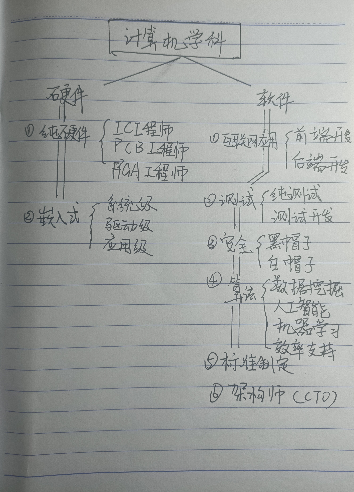

2213515335李荣容计导作业
1.来一些学习链接
百度
谷歌
莫凡
油管
B站
CSDN
2.写一些我对计算机专业的认识吧
我有一个大我十岁的表哥，大学念的是一个本二的计算机专业。
毕业后，他迅速找到了工作，月薪一万，在福州是一份不错的工作
他的工作便是程序员，整天打代码，这就是我对计算机专业的最初认识
后来接触了人工智能，机器学习，自己研究了arduino和python，
对计算机这一学科有了逐步完整的认知
小时候因为亲戚的影响形成了计算机专业就是敲代码的认识
后来发现我错了，计算机专业还能研究AI这种高大上的东西
现在我又发现我没错，AI的实质是算法，算法的核心是数学不是计算机
计算机专业还得是————敲代码
3.我的学业规划
对于计算机相关知识的学习纯粹出于不稳定的兴趣。
目前来看也不打算选择其作为专业，
但我也不会放弃对计算机的学习，
对于python与Machine Learning的学习也不会停止。
路漫漫其修远兮，吾将上下而求索。
